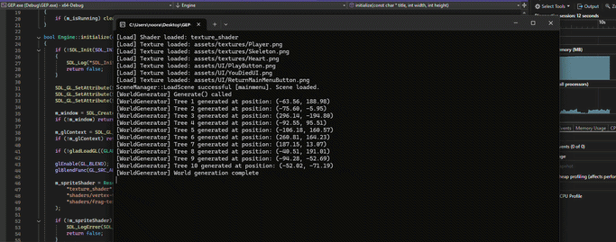

GEP-Engine
Custom Game Engine in C++
GEP-Engine is a custom game engine developed in C++.
The project originally started as a school project during a Game Engine Programming course in September–December 2025, where the engine was developed throughout the course.
After the course ended, I continued developing the engine independently to further improve my C++ programming skills and explore game engine architecture and development.

The following demonstration shows the engine running and demonstrating the current gameplay and rendering systems.
Technologies
- C++
- CMake
- SDL3
- SDL_image
- SDL_image
- OpenGL
- GLAD
- GLM
- nlohann/json
CMake is used as the build system, while SDL3 handles windowing and input-related functionality. OpenGL is used for rendering, with GLAD providing the OpenGL function loading. GLM is used for mathematical operations, and nlohmann/json is used for scene serialization.
Engine Systems
The engine includes several core systems designed to work together as a modular architecture.
Scene Managment
The engine supports creating and switching between scenes. Scenes can also be serialized and loaded using JSON, allowing game data to be stored outside the code.
Game Object and Component System
Game objects use a component-based architecture. Components can be registered, created, serialized, and deserialized, making it easier to add new functionality without tightly coupling everything together.
Resourrce Managment
A resource management system handles loading and caching assets so that resources can be reused instead of being loaded multiple times.
Input and Timing
The engine includes input management as well as delta-time and frame-timing functionality. These systems provide the foundation for responsive gameplay and frame-independent movement.
Rendering
The rendering system is built on OpenGL and currently focuses on 2D rendering.
- 2D sprite rendering
- Texture loading and management
- Shader compilation and management
- Orthographic cameras
- Sprite transformations
- Sprite layering
- Sprite color modification
- UV offset and scaling
- Horizontal sprite flipping
- Resizable windows and viewports
Working directly with OpenGL has been particularly useful for understanding the rendering pipeline and how textures, shaders, cameras, and transformations work together.
Gameplay Systems
The engine also contains several gameplay systems that were developed to test and demonstrate the underlying engine architecture.
- Player movement
- Player health
- Player weapon system
- Pickup system
- Respawn system
- UI button system
The course was not only about developing the engine itself, but also about using it to create a game. This gave the opportunity to test the engine's systems in a practical project and see how well the architecture worked when building an actual game.